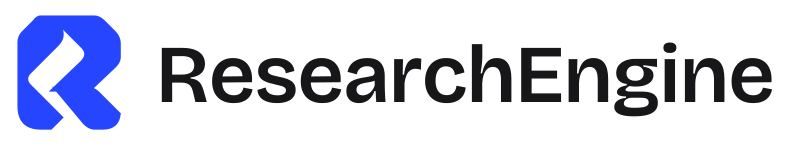
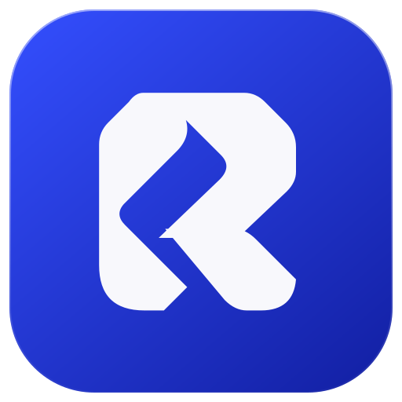
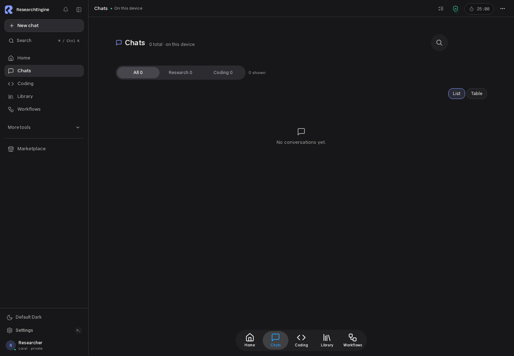
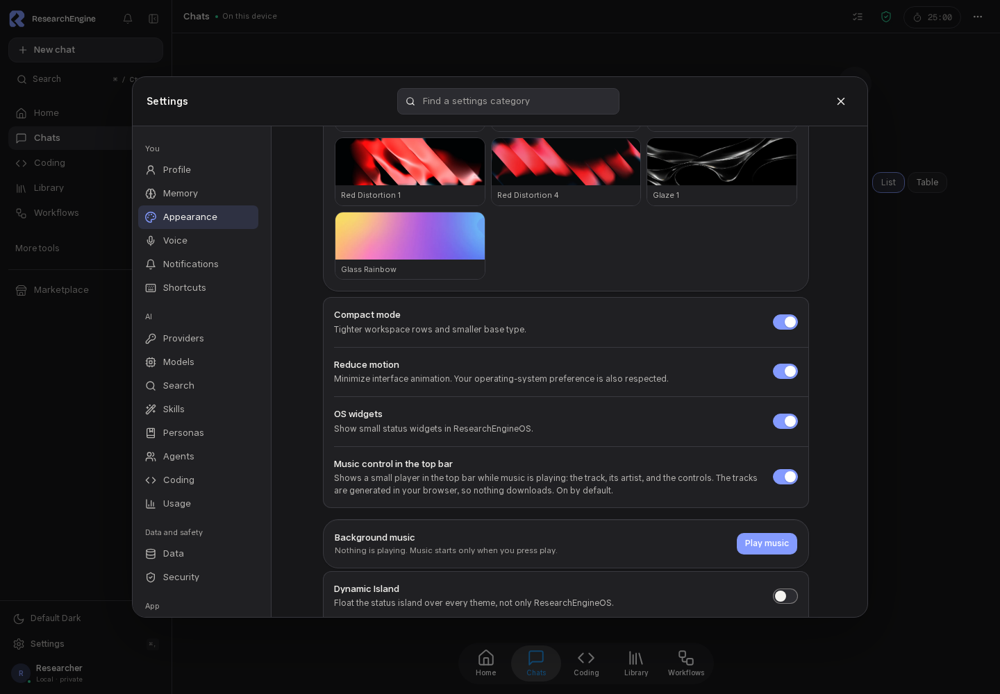

Design development / 01
An open mind.
A precise instrument.
The selected identity, translated into editable geometry. A typography comparison in working conditions—not a landing-page font specimen.


One colour. Still recognisable.SVG


Desktop icon / material studySVG

16 / 24 / 32 / 48pxNo gradient required.
Vector interpretation of the chosen generated concept—not an automatic trace. Wordmark letters are outlined Bricolage Grotesque. The identity is now integrated in the application; see the implementation renders below.


01 / Typography
Warmth, without the noise.
Allo and Work Sans, using identical content and dimensions. Locally hosted variable fonts, with their original OFL licences. Controls below affect this specimen only.
Checking font loading…
Recommendation: Allo for UI, with moderate roundness; Bricolage only for identity and sparse display. Work Sans is the more neutral comparison. This does not change the code-editor font preference.
Implementation / current checkpoint
Now in the real application.
Production renders from an isolated local preview. Actual Glisse navigation, selected logo, warm graphite surfaces, Allo and compact shared controls. Native installer validation is still pending.


02 / Desktop grammar
The work takes the foreground.
Static layout study with labelled fixture content. Not a second application or a claim that these controls are already integrated.
Research / Urban water systems
What changes when cities collect rain?
A reading surface, not a stack of dashboard cards. Citations stay close to the claim; the source inspector stays out of your paragraph.
Compare the evidence, preserve the uncertainty, and keep the original source one deliberate action away.
Glisse placement only. Production navigation uses installed Glisse, not this static illustration. Active-chat and editor exclusions remain.
03 / Material
Colour with somewhere to go.
Original CSS light study. No Grainient asset is bundled without confirmed redistribution terms. Stable opaque surfaces remain the default.